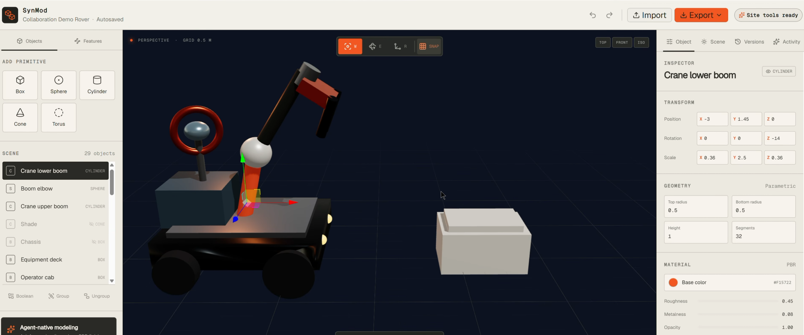

Agentic systems
SynMod
A browser 3D editor where a person and a ChatGPT/Codex agent edit the same scene. The agent works through WebMCP tools: add, transform, recolor, Boolean ops, shared undo/redo and branching checkpoints. Entered in the OpenAI/Devpost WebMCP Challenge.
WebMCP · Three.js [CONFIRM] · TypeScript [CONFIRM]